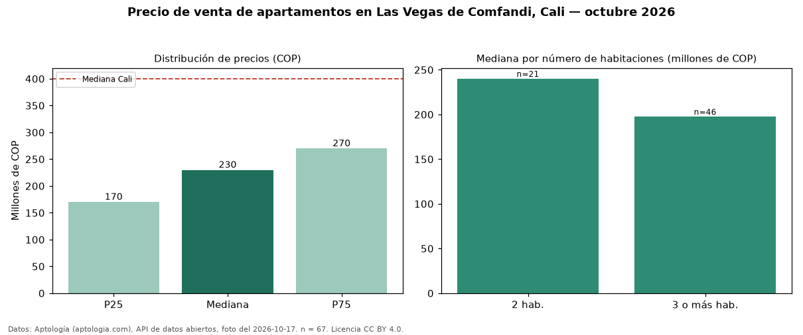

Precio de venta de apartamentos en Las Vegas de Comfandi, Cali — octubre 2026
Con 67 avisos vigentes, el precio mediano de apartamentos en venta en Las Vegas de Comfandi, Cali es COP 230 millones. Frente al total de Cali (COP 400 millones), el barrio está 43 % por debajo. Por mediana, es el puesto 67 de 74 barrios de Cali con al menos 30 avisos de apartamentos en venta: entre los más económicos. El segmento con más oferta es el de 3 o más habitaciones (46 avisos, mediana COP 198 millones); pasar de 2 habitaciones a 3 o más habitaciones sube la mediana -18 %. La mitad central de los avisos va de COP 170 millones a COP 270 millones (razón 1,6), una dispersión moderada. 39 % de los avisos incluye parqueadero, y su mediana (COP 266 millones) está 16 % por encima de la general. El aviso más barato pide COP 150 millones y el más caro COP 585 millones. Datos: Aptología (aptologia.com), API de datos abiertos, licencia CC BY 4.0 — https://www.aptologia.com/venta/cali/las-vegas-de-comfandi. Archivos: PDF de 2 páginas, CSV con las cifras y gráfica PNG.

| Avisos únicos | 67 |
|---|---|
| Percentil 25 | COP 170.250.000 |
| Mediana | COP 230.000.000 |
| Percentil 75 | COP 270.000.000 |
Fuente: avisos vigentes de portales inmobiliarios recopilados por Aptología, deduplicados (mínimo 30 avisos únicos por celda). Precios pedidos, no cerrados. Fecha: 2026-10-18.